Grammar of graphics ideas in seaborn, plotnine, altair#
This notebook is based on Visualization I–Class 4_seaborn.ipynb by Chelsea Parlett Pelleriti.
We’ll extend with additional code examples based on the Seaborn’s new objects interface.
See Visualization II–Class 5_seaborn.ipynb for part two.
import pandas as pd
import numpy as np
# Plotnine = grammar of graphics in Python
from plotnine import *
# Matplotlib = base-level graphic library
import matplotlib.pyplot as plt
# Seaborn = data visualization for statistics
import seaborn as sns
sns.set_theme()
# To get high-resulution plots
%config InlineBackend.figure_format = 'retina'
---------------------------------------------------------------------------
ModuleNotFoundError Traceback (most recent call last)
Cell In[1], line 5
2 import numpy as np
4 # Plotnine = grammar of graphics in Python
----> 5 from plotnine import *
7 # Matplotlib = base-level graphic library
8 import matplotlib.pyplot as plt
ModuleNotFoundError: No module named 'plotnine'
mtcars = pd.read_csv("https://gist.githubusercontent.com/seankross/a412dfbd88b3db70b74b/raw/5f23f993cd87c283ce766e7ac6b329ee7cc2e1d1/mtcars.csv")
# %pip install -U seaborn
sns.__version__ # need 0.12 or later
'0.12.0'
import seaborn.objects as so
INTRO to GG#
# (ggplot(mtcars, aes(x = "wt", y = "mpg")) + geom_point())
sns.scatterplot(x = "wt", y = "mpg", data = mtcars)
<AxesSubplot:xlabel='wt', ylabel='mpg'>
{kind=link}
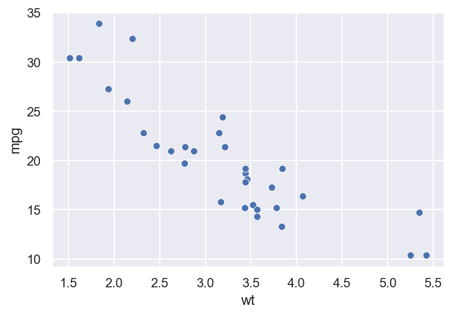
(
so.Plot(mtcars, x="wt", y="mpg")
.add(so.Dot())
)
{kind=link}
# (ggplot(mtcars, aes(x = "wt", y = "mpg")) + geom_point() +
# stat_smooth(method = "lm"))
sns.regplot(x = "wt", y = "mpg", data = mtcars)
<AxesSubplot:xlabel='wt', ylabel='mpg'>
{kind=link}
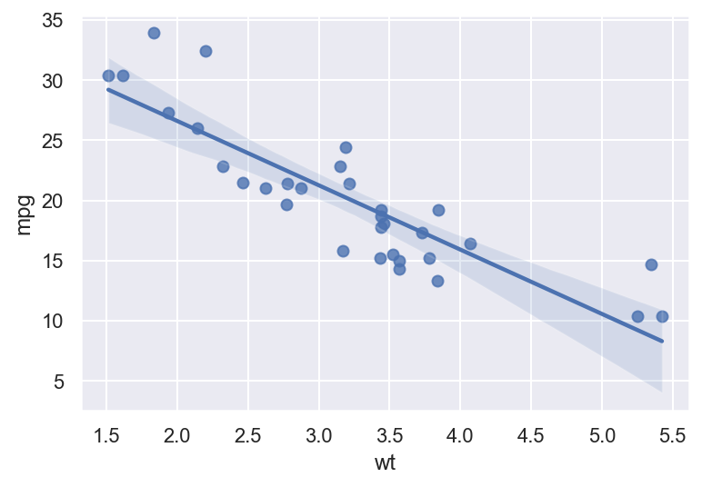
(
so.Plot(mtcars, x="wt", y="mpg")
.add(so.Dots())
.add(so.Line(), so.PolyFit(order=1))
)
{kind=link}
# TODO: figure out so.Band() and so.Est()
# https://seaborn.pydata.org/generated/seaborn.objects.Est.html
so.Band
so.PolyFit
so.Est
seaborn._stats.aggregation.Est
# (ggplot(mtcars, aes(x = "wt", y = "mpg")) + geom_point() +
# stat_smooth(method = "lm") +
# facet_wrap("~gear"))
facet = sns.FacetGrid(col = "gear", data = mtcars)
facet.map(sns.regplot, "wt", "mpg")
<seaborn.axisgrid.FacetGrid at 0x1329ee310>
{kind=link}
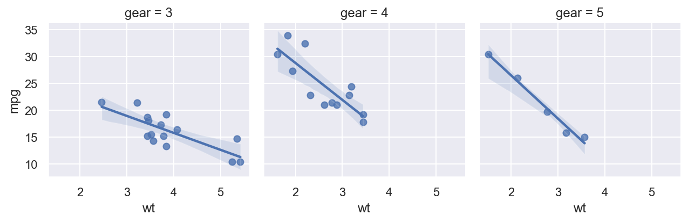
(
so.Plot(mtcars, x="wt", y="mpg")
.facet(col="gear")
.add(so.Dots())
.add(so.Line(), so.PolyFit(order=1))
)
{kind=link}
# (ggplot(mtcars, aes(x = "wt", y = "mpg", color = "factor(gear)")) + geom_point() +
# stat_smooth(method = "lm") +
# facet_wrap("~gear"))
facet = sns.FacetGrid(col = "gear", data = mtcars, hue = "gear")
facet.map(sns.regplot, "wt", "mpg")
<seaborn.axisgrid.FacetGrid at 0x132a3f6d0>
{kind=link}
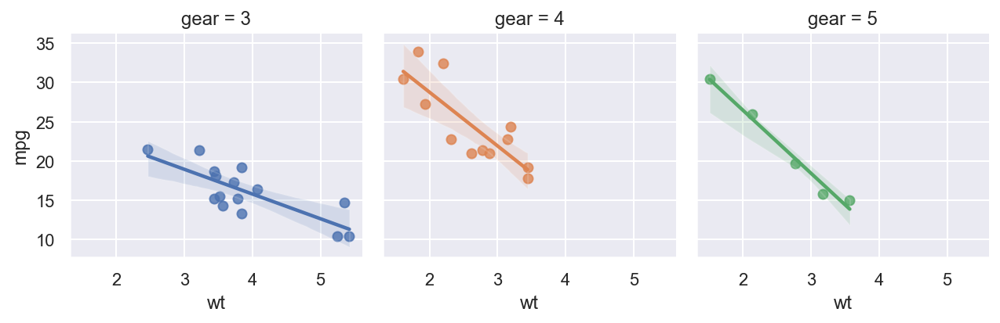
(
so.Plot(mtcars, x="wt", y="mpg", color="gear")
.facet(col="gear")
.add(so.Dots())
.add(so.Line(), so.PolyFit(order=1))
)
{kind=link}
penguin = pd.read_csv("https://raw.githubusercontent.com/cmparlettpelleriti/CPSC392ParlettPelleriti/master/Data/penguins.csv")
penguin.head()
| Unnamed: 0 | species | island | bill_length_mm | bill_depth_mm | flipper_length_mm | body_mass_g | sex | year | |
|---|---|---|---|---|---|---|---|---|---|
| 0 | 0 | Adelie | Torgersen | 39.1 | 18.7 | 181.0 | 3750.0 | male | 2007 |
| 1 | 1 | Adelie | Torgersen | 39.5 | 17.4 | 186.0 | 3800.0 | female | 2007 |
| 2 | 2 | Adelie | Torgersen | 40.3 | 18.0 | 195.0 | 3250.0 | female | 2007 |
| 3 | 3 | Adelie | Torgersen | NaN | NaN | NaN | NaN | NaN | 2007 |
| 4 | 4 | Adelie | Torgersen | 36.7 | 19.3 | 193.0 | 3450.0 | female | 2007 |
SNS Basic Steps#
1. Tell SNS what kind of plot you want (using sns.*)#
2. Tell SNS what you want to plot (inside the sns.*() function)#
# (ggplot(penguin, aes(x = "bill_length_mm", y = "bill_depth_mm", color = "species")))
#sns.scatterplot()
sns.scatterplot(x = "bill_length_mm", y = "bill_depth_mm", hue = "species", data = penguin)
<AxesSubplot:xlabel='bill_length_mm', ylabel='bill_depth_mm'>
{kind=link}
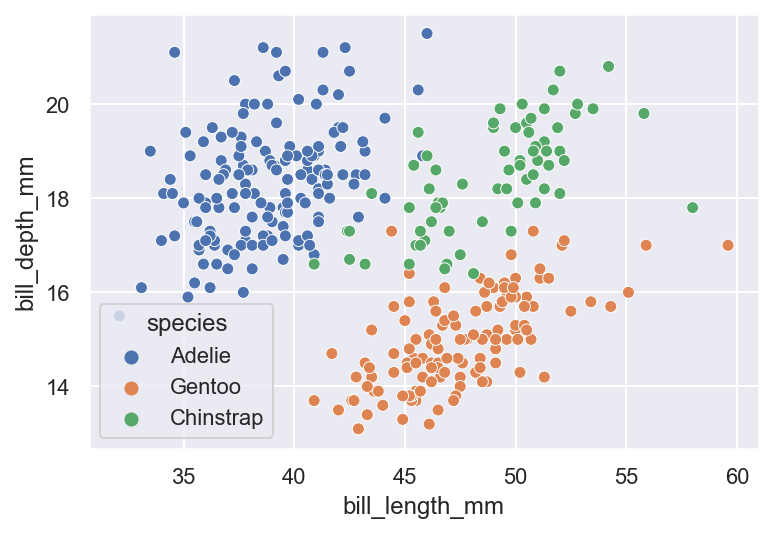
(
so.Plot(penguin, x="bill_length_mm", y="bill_depth_mm", color="species")
.add(so.Dot())
)
{kind=link}
# (ggplot(penguin, aes(x = "body_mass_g")) + geom_histogram())
sns.histplot(x = "body_mass_g", data = penguin)
<AxesSubplot:xlabel='body_mass_g', ylabel='Count'>
{kind=link}
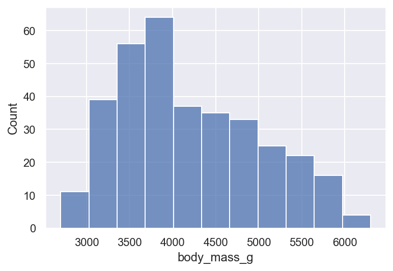
(
so.Plot(penguin, x="body_mass_g")
.add(so.Bar(), so.Hist())
)
{kind=link}
# (ggplot(penguin, aes(x = "species")) + geom_bar())
sns.countplot(x = "species", data = penguin)
<AxesSubplot:xlabel='species', ylabel='count'>
{kind=link}
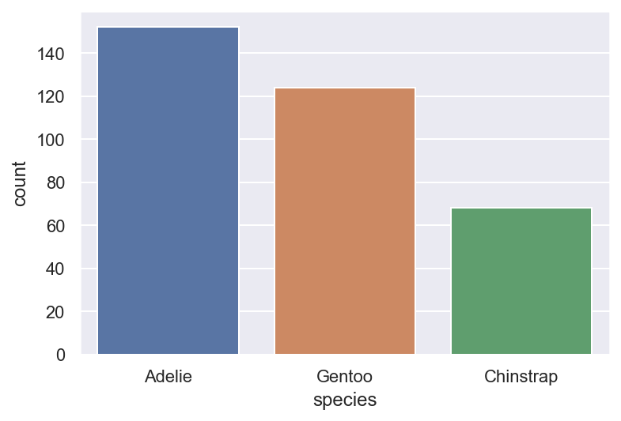
(
so.Plot(penguin, x="species", color="species")
.add(so.Bar(), so.Hist())
)
{kind=link}
# (ggplot(penguin, aes(x = "species", y = "bill_length_mm")) + geom_boxplot())
sns.boxplot(x ="species", y = "bill_length_mm", data = penguin)
<AxesSubplot:xlabel='species', ylabel='bill_length_mm'>
{kind=link}
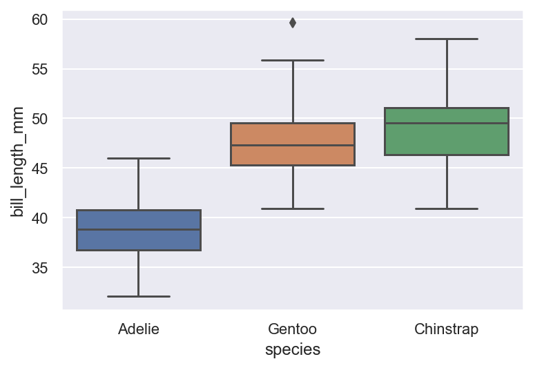
# TODO ??? boxplot ???
# (ggplot(penguin, aes(x = "species", y = "bill_length_mm", fill = "species")) +
# geom_point() +
# geom_boxplot() + theme_minimal())
sns.boxplot(x ="species", y = "bill_length_mm", data = penguin)
sns.scatterplot(x = "species", y = "bill_length_mm", data = penguin, color = "black")
<AxesSubplot:xlabel='species', ylabel='bill_length_mm'>
{kind=link}
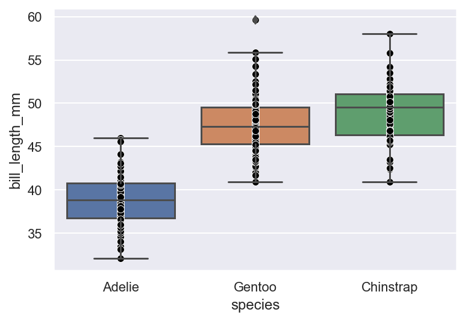
# (ggplot(penguin, aes(x = "species", y = "bill_length_mm")) +
# geom_point() +
# geom_boxplot(aes(fill = "species")) + theme_minimal())
sns.set_style("white")
sns.boxplot(x ="species", y = "bill_length_mm", data = penguin)
sns.scatterplot(x = "species", y = "bill_length_mm", data = penguin, color = "black")
<AxesSubplot:xlabel='species', ylabel='bill_length_mm'>
{kind=link}
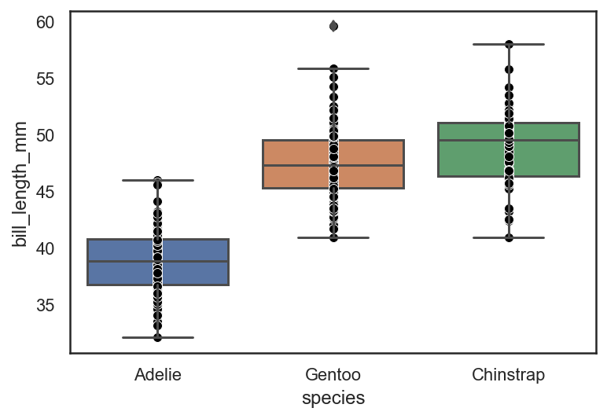
Prepping Data for Barcharts#
# (ggplot(penguin, aes(x = "species", y = "body_mass_g", fill = "species")) +
# stat_summary(fun_data = "mean_sdl", geom = "bar"))
sns.barplot(x = "species", y = "body_mass_g", hue = "species", data = penguin, dodge = False)
<AxesSubplot:xlabel='species', ylabel='body_mass_g'>
{kind=link}
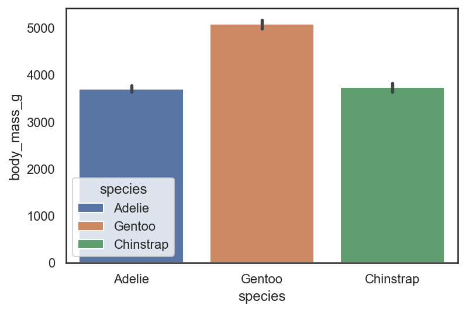
# (ggplot(penguin, aes(x = "species", y = "body_mass_g", fill = "species")) +
# stat_summary(fun_data = "mean_sdl", geom = "bar") +
# labs(x = "Species", y = "Body Mass (g)") +
# ggtitle("Penguin Body Mass by Species") +
# theme_minimal() +
# theme(panel_grid_major_x = element_blank(),
# panel_grid_minor_x = element_blank(),
# panel_grid_minor_y = element_blank(),
# legend_position = "none"))
bp = sns.barplot(x = "species", y = "body_mass_g", hue = "species", data = penguin, dodge = False)
bp.set(title = "Penguin Body Mass by Species",
xlabel = "Species", ylabel = "Body Mass (g)")
bp.grid(False)
plt.legend([],[], frameon = False)
<matplotlib.legend.Legend at 0x133304b80>
{kind=link}
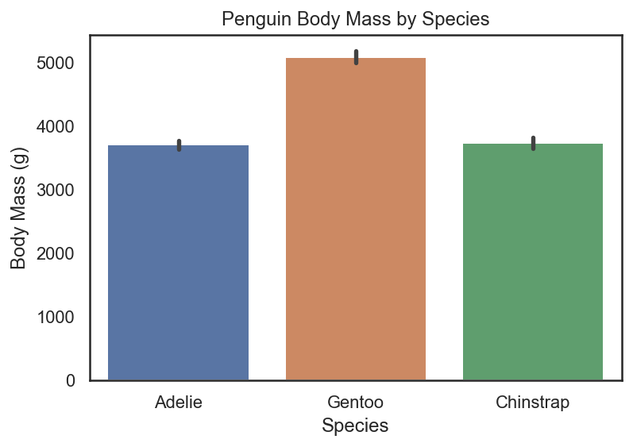
penguin_bill = penguin.groupby(["species"], as_index = False)["bill_length_mm"].mean()
penguin_bill
| species | bill_length_mm | |
|---|---|---|
| 0 | Adelie | 38.791391 |
| 1 | Chinstrap | 48.833824 |
| 2 | Gentoo | 47.504878 |
# (ggplot(penguin_bill, aes(x = "species", y = "bill_length_mm", fill = "species")) +
# geom_bar(stat = "identity") + theme_minimal() +
# labs(x = "Species", y = "Average Bill Length (mm)"))
bp2 = sns.barplot(x = "species", y = "bill_length_mm", hue = "species", data = penguin_bill, dodge = False)
bp2.set(xlabel = "Species", ylabel = "Average Bill Length (mm)")
plt.legend([],[], frameon = False)
<matplotlib.legend.Legend at 0x133356550>
{kind=link}
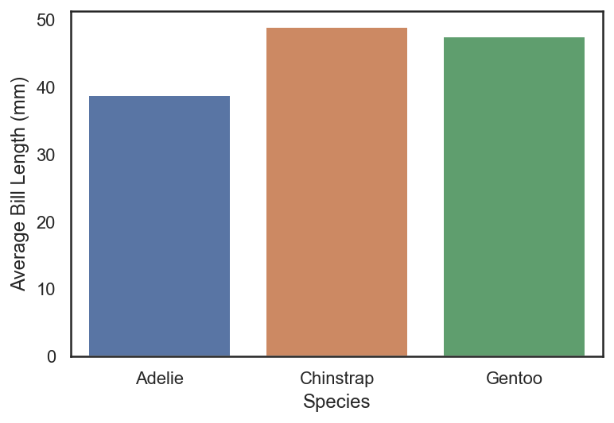
NON Count Bar Charts#
books = ["Home Before Dark", "The Wives", "You", "The Last Mrs. Parrish", "The Guest List", "Invisible Girl"]
ratings = [4.08,3.63,3.93,3.93, 3.85, 3.81]
book_df = pd.DataFrame({"books":books, "ratings": ratings})
book_df
| books | ratings | |
|---|---|---|
| 0 | Home Before Dark | 4.08 |
| 1 | The Wives | 3.63 |
| 2 | You | 3.93 |
| 3 | The Last Mrs. Parrish | 3.93 |
| 4 | The Guest List | 3.85 |
| 5 | Invisible Girl | 3.81 |
# (ggplot(book_df, aes(x = "books", y = "ratings")) +
# geom_bar(aes(fill = "books"), stat = "identity") +
# theme_minimal() +
# labs(title = "Book Ratings",
# x = "Book Titles",
# y = "Average GoodRead Ratings") +
# theme(axis_text_x = element_text(angle = 45),
# legend_position = "none"))
bp3 = sns.barplot(data = book_df, x = "books", y = "ratings", hue = "books", dodge = False)
bp3.set(title = "Book Ratings",
xlabel = "Book Titles", ylabel = "Average GoodRead Ratings")
plt.xticks(rotation=45)
plt.legend([],[], frameon = False)
<matplotlib.legend.Legend at 0x1333cf640>
{kind=link}
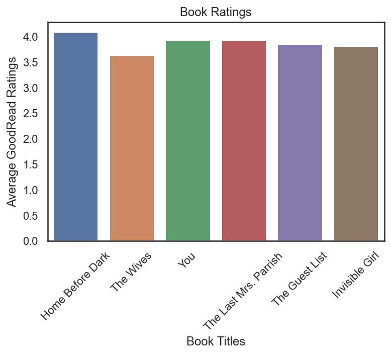
(
so.Plot(book_df, x="books", y="ratings", color="books")
.add(so.Bar(), so.Agg())
)
# TODO How to rotate ticks??
{kind=link}
Let’s Try to explore a new data set using Visualization!#
cereal = pd.read_csv("https://raw.githubusercontent.com/reisanar/datasets/master/Cereals.csv")
cereal.head()
| name | mfr | type | calories | protein | fat | sodium | fiber | carbo | sugars | potass | vitamins | shelf | weight | cups | rating | |
|---|---|---|---|---|---|---|---|---|---|---|---|---|---|---|---|---|
| 0 | 100%_Bran | N | C | 70 | 4 | 1 | 130 | 10.0 | 5.0 | 6.0 | 280.0 | 25 | 3 | 1.0 | 0.33 | 68.402973 |
| 1 | 100%_Natural_Bran | Q | C | 120 | 3 | 5 | 15 | 2.0 | 8.0 | 8.0 | 135.0 | 0 | 3 | 1.0 | 1.00 | 33.983679 |
| 2 | All-Bran | K | C | 70 | 4 | 1 | 260 | 9.0 | 7.0 | 5.0 | 320.0 | 25 | 3 | 1.0 | 0.33 | 59.425505 |
| 3 | All-Bran_with_Extra_Fiber | K | C | 50 | 4 | 0 | 140 | 14.0 | 8.0 | 0.0 | 330.0 | 25 | 3 | 1.0 | 0.50 | 93.704912 |
| 4 | Almond_Delight | R | C | 110 | 2 | 2 | 200 | 1.0 | 14.0 | 8.0 | NaN | 25 | 3 | 1.0 | 0.75 | 34.384843 |
# (ggplot(cereal, aes(x = "mfr", fill = "mfr")) + geom_bar() + theme_bw())
sns.countplot(data = cereal, x = "mfr", hue = "mfr", dodge = False)
<AxesSubplot:xlabel='mfr', ylabel='count'>
{kind=link}
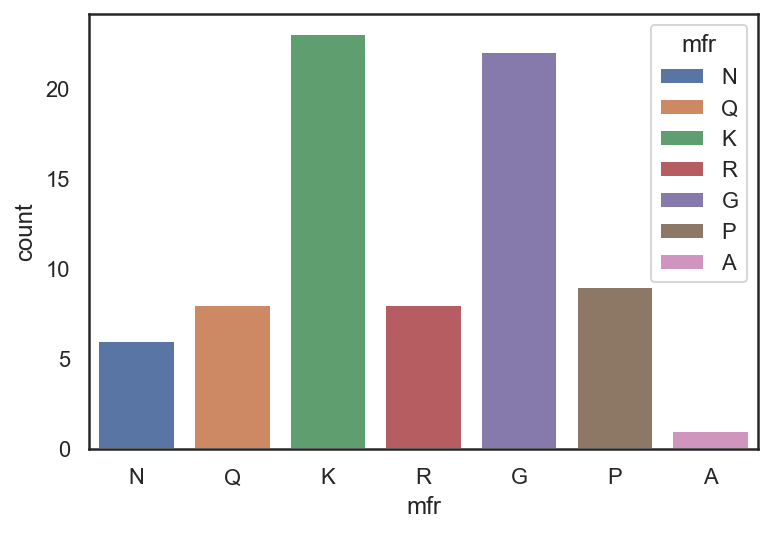
#facet wrap/grid
# (ggplot(cereal, aes(x = "protein", y = "sugars")) + geom_point() + theme_bw() +
# facet_wrap("~mfr"))
f = sns.FacetGrid(data = cereal, col = "mfr", col_wrap= 3)
f.map(sns.scatterplot, "protein", "sugars")
<seaborn.axisgrid.FacetGrid at 0x132e18eb0>
{kind=link}
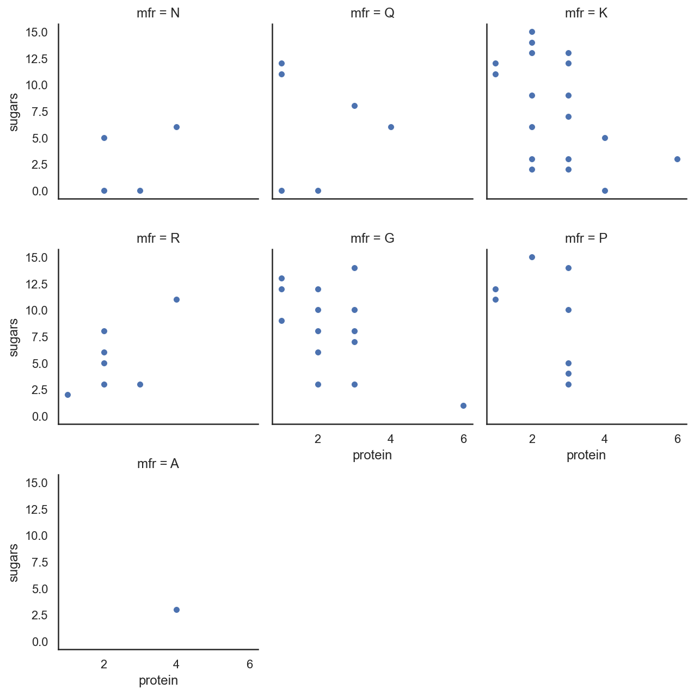
# (ggplot(cereal, aes(x = "mfr", y = "sugars")) + geom_boxplot() + theme_minimal())
sns.boxplot(data = cereal, x = "mfr", y = "sugars")
<AxesSubplot:xlabel='mfr', ylabel='sugars'>
{kind=link}
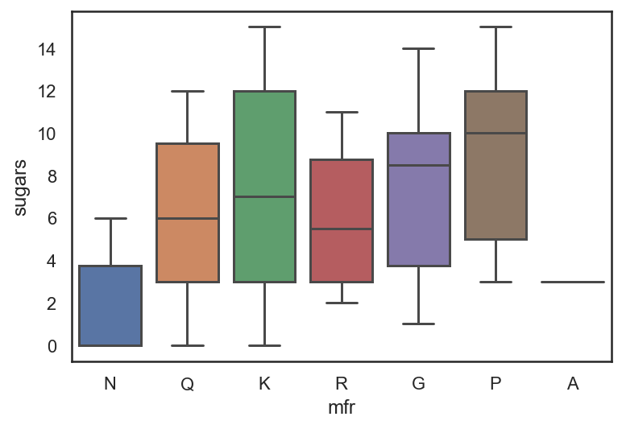